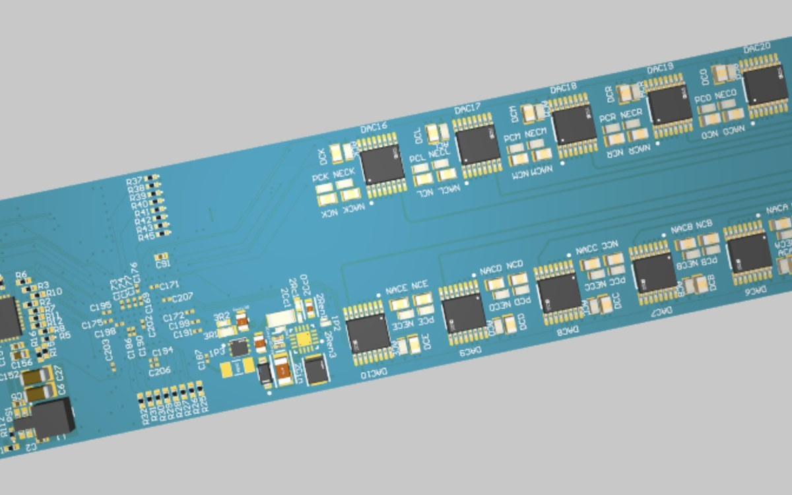
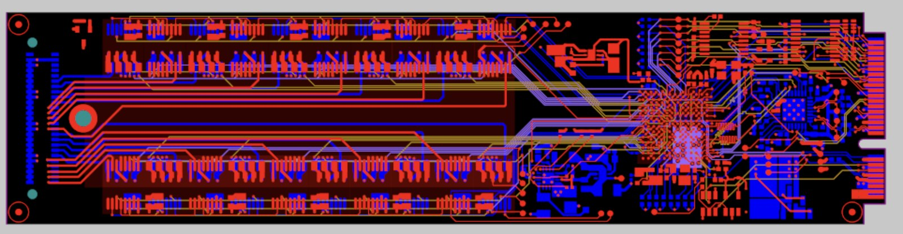
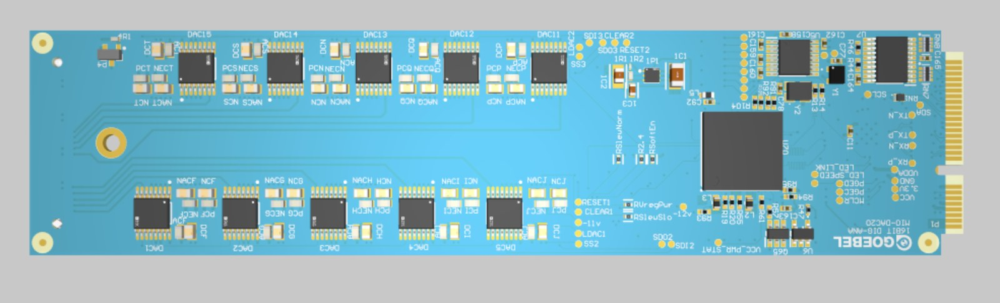

Electronics Design Internship
MIO-DAC20 Board + Manual
MIO-DAC20 work combined practical electronics documentation with schematic cleanup, PCB review, interface documentation, and board-level validation thinking for a multi-channel DAC product.
My work
Cleaning up hardware files and making the board supportable.
At Goebel Company, I supported the MIO-DAC20 workflow by cleaning Altium schematic issues, reviewing library and net-name problems, updating project documentation, and helping prepare files for handoff and support.
The user manual documents board configuration, connectors, HTTP REST control, UDP command structure, and programming examples. My work helped make the hardware easier to understand, validate, and support beyond the schematic itself.
Open manualPhotos
Board-level context.



